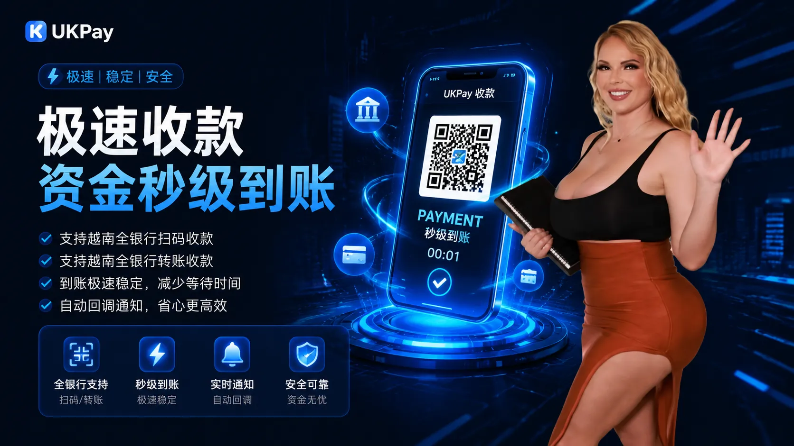
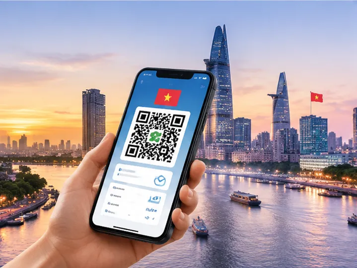

专业越南代收通道，提供越南本地收款服务
随着越南电子商务、数字服务以及跨境业务快速发展，越来越多海外企业需要稳定可靠的越南本地收款渠道，以满足用户在线支付和交易需求。
UKPay提供专业越南代收通道服务，通过支付接口连接越南本地支付资源，帮助企业实现用户付款接入、订单收款以及交易数据管理。
我们针对跨境电商、游戏平台、互联网企业等不同业务场景，提供灵活的越南收款解决方案，提高支付效率并优化用户付款体验。

越南收款通道核心优势
快速到账处理
优化支付流程，提高订单处理速度，帮助企业提升用户支付体验。

多场景线上收款
支持电商购物、游戏充值、数字服务等多种线上交易场景。
资金安全可靠
完善交易流程管理，保障订单数据和支付过程稳定运行。
越南代收通道适用业务场景

跨境电商本地收款
帮助海外商家接入越南消费者支付方式，实现本地化购物付款体验。

游戏充值支付
支持游戏用户在线充值，提高支付便利性和交易转化率。

互联网平台收款
满足平台业务订单收款、用户付款以及资金管理需求。
越南代收通道接入流程
业务需求沟通
支付方案设计
API接口对接
测试上线运营


选择UKPay越南代收通道服务
UKPay专注于越南本地支付服务，为企业提供稳定、高效的越南收款通道解决方案。
通过专业支付接口和本地化服务能力，帮助企业降低进入越南市场的支付门槛，实现更便捷的用户收款体验。
无论是跨境电商、游戏业务还是互联网平台，我们均可根据企业需求提供匹配的越南代收方案。